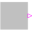
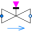

ControlledTanksDemonstrating the controller of a tank filling/emptying system |
|
Diagram
{kind=link}
Information
This information is part of the Modelica Standard Library maintained by the Modelica Association.
With this example, the controller of a tank filling/emptying system is demonstrated.
The basic operation is to fill and empty the two tanks:
- Valve 1 is opened and tank 1 is filled.
- When tank 1 reaches its fill level limit, valve 1 is closed.
- After a waiting time, valve 2 is opened and the fluid flows from tank 1 into tank 2.
- When tank 1 reaches its minimum level, valve 2 is closed.
- After a waiting time, valve 3 is opened and the fluid flows out of tank 2
- When tank 2 reaches its minimum level, valve 3 is closed
The above "normal" process can be influenced by three buttons:
- Button start starts the above process. When this button is pressed after a "stop" or "shut" operation, the process operation continues.
- Button stop stops the above process by closing all valves. Then, the controller waits for further input (either "start" or "shut" operation).
- Button shut is used to shutdown the process, by emptying at once both tanks by opening valve 2 and valve 3. When this is achieved, the process goes back to its start configuration where all 3 valves are closed. Clicking on "start", restarts the process.
The demo-run uses the following button presses:
- Button start pressed at 20 s.
- Button stop pressed at 220 s
- Button start pressed at 280 s
- Button stop pressed at 650 s
- Button shut pressed at 700 s
- Simulate for 900 s
This example is based on
- Dressler I. (2004):
- Code Generation From JGrafchart to Modelica.
Master thesis, supervisor: Karl-Erik Årzén,
Department of Automatic Control, Lund Institute of Technology,
Lund, Sweden, March 30, 2004

Components (14)
| tankController |
Type: TankController |
|
|---|---|---|
|  | start |
Type: RadioButtonSource |
| stop |
Type: RadioButtonSource |
|
| shut |
Type: RadioButtonSource |
|
|  | valve1 |
Type: ValveDiscrete |
| tank1 |
Type: OpenTank |
|
| level1 |
Type: RealExpression |
|
| valve2 |
Type: ValveDiscrete |
|
| valve3 |
Type: ValveDiscrete |
|
| tank2 |
Type: OpenTank |
|
| ambient1 |
Type: Boundary_pT |
|
| level2 |
Type: RealExpression |
|
| source |
Type: Boundary_pT |
|
| system |
Type: System |